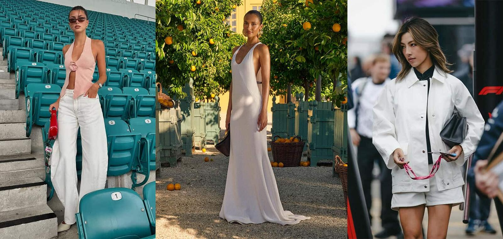
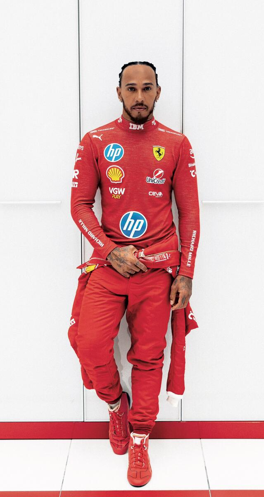

The Monaco Grand Prix is no longer just a race. It is the most concentrated intersection of speed, money, and personal style on earth. In 2026, with Louis Vuitton as title sponsor and the paddock functioning as a de facto front row, the question is no longer whether fashion belongs at the circuit. It is whether fashion can keep up.
The announcement arrived in early 2025. LVMH, through Louis Vuitton, signed a ten-year partnership with Formula 1. The deal did not merely place logos on barriers. It placed the world’s most valuable luxury house at the centre of the sport’s most visible ritual. The trophy trunk. The podium presentation. The victory moment carried in monogrammed leather. Formula 1 had been circling fashion for years. Now fashion had put its name on the building.
Monaco sits at the heart of this. The principality has always functioned differently from other circuits. Silverstone is a field with grandstands. Monza is speed made industrial. Monaco is a theatre. The cars thread through streets where the balconies above belong to people whose wardrobes are curated seasonally. The harbour holds vessels that cost more than the cars. The paddock exists at the intersection of sport and spectacle, and for a generation of new fans, it is the spectacle that arrives first.
The Paddock as Front Row
Something changed in how people dress for the grid. It happened gradually and then all at once. The paddock pass, once a lanyard clipped to a polo shirt, has become an accessory in its own right. It dangles from the handle of a Hermès Kelly or threads through the strap of a Bottega Veneta Jodie. It photographs well. That matters now.

The new paddock generation. Mixing accessible pieces with luxury in ways that feel considered, not performed. Photography courtesy of 10 Magazine.
A new generation of women connected to the sport have become style figures in their own right. They are not simply seen at the races. They are studied. Alexandra Saint Mleux, the art curator and partner of Ferrari’s Charles Leclerc, has built a following of over two million by doing something deceptively simple. She mixes designer pieces with everyday clothes. Jacquemus at one race. Zara at the next. At Monaco, she wore red and white as a nod to the flag of Leclerc’s home principality. The gesture was small. The audience was enormous.
Kika Gomes, the Portuguese model and Pierre Gasly’s partner, operates with similar intelligence. At the 2024 Monaco Grand Prix, she wore Zara jeans, a white button-down, and Hermès Oran sandals. The combination cost a fraction of a full designer look. It photographed as though it cost ten times more. The message was clear. Paddock style in 2026 is not about spending. It is about editing.
The paddock pass has become an accessory. It dangles from the handle of a Kelly or threads through the strap of a Bottega Veneta Jodie. It photographs well. That matters now.
Camille AshworthThe statistics support the shift. Women now represent seventy-five per cent of new Formula 1 fans. Half of those identify as Gen Z. Fan accounts dedicated to tracking paddock outfits have amassed audiences that rival traditional fashion media. Brands have noticed. Twenty-four race weekends per season, three days each, multiplied across a grid of drivers and their partners. The exposure is immense. The context is aspirational. The lighting, oddly, is excellent.
Leclerc, Ferrari, and the Capsule

Charles Leclerc for the Ferrari capsule collection. Track-side precision meets off-duty sophistication. Photography courtesy of CR Fashion Book / Ferrari.
Ferrari understood this before most. In May 2025, ahead of the Monaco Grand Prix, the Scuderia launched a capsule collection with its home driver. Leclerc, who grew up in Monaco and races with the number sixteen on his car, modelled the pieces himself. The images showed him seated on a vintage trunk, helmet beside him, wearing a grey hoodie and light denim. The clothes were relaxed. The setting was not. The combination produced something fashion has spent decades trying to manufacture. Authenticity that did not need to announce itself.
The collection fused track precision with the kind of off-duty sophistication that luxury brands sell at ten times the price. It arrived at a moment when Ferrari the fashion house and Ferrari the racing team had begun to converge. The Maranello atelier now operates as a standalone luxury division. The paddock is its showroom. Leclerc is its face. Monaco is its stage.
The Louis Vuitton Era
The LVMH deal changed the texture of the sport. Louis Vuitton does not sponsor events the way a watchmaker or an energy drink does. It absorbs them. The trophy trunk is not a sponsorship. It is a product. When the winner lifts the constructors’ trophy from its monogrammed case, the moment becomes part of Louis Vuitton’s visual language. It enters the brand’s archive alongside the America’s Cup and the FIFA World Cup. The sport’s highest moment is now dressed in leather and brass.
This is not accidental. LVMH has been assembling a portfolio of sporting partnerships that positions the group not as a sponsor but as a custodian of excellence. Moet & Chandon on the podium. TAG Heuer on the timing screens. Louis Vuitton on the trophy. The Formula 1 grid in 2026 is, in practical terms, an LVMH production staged on public roads.

Lewis Hamilton joined Ferrari in 2025 and brought his personal style to Maranello. Photography courtesy of Wallpaper*.
Lewis Hamilton’s move to Ferrari in 2025 added another dimension. Hamilton has long operated at the intersection of motorsport and fashion. He sits front row at Dior. He wore Valentino couture to the Met Gala. His personal brand is inseparable from how he dresses, and his arrival at Maranello brought a level of fashion credibility that no sponsorship deal could buy. When Hamilton pulls on the red suit, it reads as costume design. The paddock becomes editorial.
What Monaco Wears Now
The dress code at Monaco has always been implicit. It is not printed on the ticket. It is absorbed through observation. On the harbour-facing terraces, men wear breezy tailored suits in summer-neutral tones. Women move between two-piece sets, designer dresses, and what might be called race-worthy streetwear. The silhouettes are clean. The bags are small. Top-handle mini bags from Hermès, Bottega Veneta, or Jacquemus appear repeatedly. They hold the essentials and nothing more. The paddock pass clips to the handle.
Sunglasses function as both shield and signifier. Oversized frames from Chanel. Cat-eye silhouettes from Miu Miu. Retro rounds from Céline. The choice communicates as precisely as the outfit beneath it. Colour has shifted. Butter yellow has emerged as a neutral. All-white ensembles dominate. The emphasis has moved from logos to texture. Quiet luxury, the phrase that defined fashion in 2024, found its natural home at the Monaco Grand Prix and has not left.
Evening demands escalation. The yacht parties and VIP terraces that extend race weekend into the small hours require satin slip dresses, tailored jumpsuits, and embellished sandals. The transition from day to night happens in hotel rooms overlooking the harbour, and it happens quickly. The women who do it best treat the entire weekend as a single, continuous edit. Each look responds to the one before it.
The Collision That Stays
There is a temptation to dismiss the fashion layer of Formula 1 as surface. To argue that the sport is about engineering and courage and the precise application of downforce through a corner at two hundred kilometres per hour. That is true. It is also incomplete. Sport has always been a performance, and performance has always required costume. The matador’s suit of lights. The boxer’s robe. The tennis white. Formula 1 has simply acknowledged what was always present. That how the grid looks is part of what the grid means.
Monaco accelerates this. The principality is small enough that the boundaries between the circuit and the city dissolve. The car that corners at Tabac passes a café where someone is wearing next season’s Saint Laurent. The mechanic in the garage and the woman on the terrace are separated by a barrier and a world, and yet they are watching the same thing. The race. The spectacle. The moment when speed becomes style and style becomes something worth watching at three hundred kilometres per hour.
Louis Vuitton understood this when it signed the contract. Ferrari understood it when it dressed Leclerc for a campaign. The new generation of paddock regulars understood it before anyone. The Monaco Grand Prix in 2026 is not a sporting event with a fashion problem. It is a fashion event that happens to include the most demanding street circuit in the world. The chequered flag now comes in monogram.